|
作者注：最近老有网友问我龙枪书籍到底有多少？哪儿能买到全部的书？事实上龙枪的同人小说多如牛毛。仅仅获得了TSR官方承认的龙枪系列书籍就有一百本左右了，这些书包括众多的前传、外传、传说、故事等等。龙枪系列的主线到目前为止有三部：其一是龙枪编年史三部曲（秋、冬、春），讲述的是称之为长枪之战(the War of Lance)的故事；其二是被网友们爆炒的夏焰之巨龙，讲述的是混乱之战(the War of Chaos)的故事；最后是现在正在出的但还没出完的灵魂之战(the War of Souls)系列。对克莱恩历史还不太清楚的网友可以参看拙作龙枪历史简表一文。而大家熟悉的龙枪传奇三部曲其实也只是主线之外很成功的支线作品之一而已。在这一百多本书中，因为不全是龙枪的两名原作者所著，所以质量良莠不齐。其中有不少已经绝版了，所以大家全看到的机会不大――也没这个必要:)以下的简介参考了多个网站，主要有亚马逊、WotC官方网站等等。
编年史三部曲(Chronicles)
玛格丽特・魏丝(Margaret Weis)、崔西・希克曼(Tracy Hickman)
| 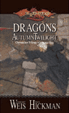 |
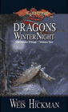 |
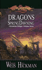 |
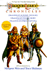 |
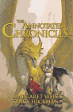 |
| 秋暮之巨龙(Dragons of Autumn Twilight) |
冬夜之巨龙(Dragons of Winter Night) |
春晓之巨龙(Dragons of Spring Dawning) |
收藏版(Chronicles Collector's Edition) |
评注版(The Annotated Dragonlance Chronicles) |
这三本书中的故事即是所谓的长枪之战(the War of Lance)，面对这三本组成的堪与魔戒之王(the Lord of the rings)媲美的宏著，任何话都是多余的了。在此强烈建议有经济能力的网友购买一套正在发售的中文简版正版收藏。
需要指出的是，两位作者1983年写作此书时才是他俩第一次合作写奇幻小说。两位新人的处女作1984年秋发行后短短三、四个月后（其中还包括发行延误的时间）就登上了《纽约时报》的畅销书榜，实在可称得上是一个奇迹。
上面的收藏版是秋、冬、春三部的合集。而评注版也是秋、冬、春三部的合集，同时还有两位作者的详细注释。
夏焰之巨龙(Dragons of Summer Flame)
故事发生在长枪之战很久以后。老一辈英雄已经老去，他们的儿女成长起来，面对的是再次开始动荡的克莱恩世界。帕林(Palin)，卡拉蒙和提卡的儿子，一位白袍法师，企图进入无尽深渊(the Abyss)寻找他的叔叔――雷斯林；斯蒂尔・布莱特布雷德(Steel Brightblade，就是最近有翻译成“史钢”的。不过对这种译法紫晶实在不敢恭维，要说翻出steel的意思译成钢・布莱特布雷德还说得过去，但史东可不是姓“史”是姓“布莱特布雷德”啊！)――史东和奇蒂拉的儿子，也正准备随黑暗骑士进攻法王之塔――他的父亲曾为之守卫、为之牺牲的地方；而在海外的一个小岛上，爱达人(the Irda)收养的孤女乌莎(Usha)带着谜一般的白发金眼，来到了帕兰萨斯；而混沌之神(the Chaos)也在暗暗准备回到克莱恩……在这酷热难耐的夏季，克莱恩的天平再次开始摆动，新的传说开始了……
本书于1996年推出，距离跨时代的《秋暮之巨龙》已时隔13年。在此期间玛格丽特・魏丝和崔西・希克曼合作了多部龙枪系列的相关小说，但包括大家熟悉的《龙枪传奇》在内，几乎都是属于回过头来补叙克莱恩历史的小说。于是这本接着长枪之战往后故事的书理所当然地造成了极大的轰动，一举冲上畅销书榜。在这部书中，两位作者接着长枪之战，描述了被称为混乱之战(the War of Chaos)的战事。与秋、冬、春三部不同，不少读者（尤其是13年前就开始看龙枪的老读者）对这部书评价极低！不过大家不要误会了，他们只是无法忍受作者“谋杀”了坦尼斯、泰斯这些他们最喜爱的角色:)
大家可以发现，龙枪系列的书籍一般都是三部曲，但唯有这本夏焰之巨龙是单独成册的。由于夏焰之巨龙的故事发生在克莱恩世界两个纪元的交界处，所以有把它归入编年史三部曲的，也有把它归入第五纪元三部曲的。WotC官方网站上对此好像也没有明确的说法，紫晶还是倾向于把它看作独立的一套:)
灵魂之战三部曲(the War of Soul)
玛格丽特・魏丝、崔西・希克曼
| 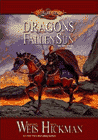 |
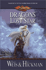 |
? |
| 落日之巨龙(Dragons of a Fallen Sun) |
陨星之巨龙(Dragons of a Lost Star) |
??? |
落日之巨龙(2000年3月12日出版)
距离那场毁灭性的混乱之战过了四十年，众神离开克莱恩也有四十年了。一场魔法风暴席卷安塞隆，带来的是洪水和火灾，死亡和毁灭。奈拉卡的黑暗骑士计划着包围索兰尼亚骑士的大本营帕兰萨斯；奎灵那斯提和西瓦那斯提的精灵们制造了一个非常大的魔法屏障包围了整个精灵王国；年老的金月创建了光之基地(the Citadel of Light)；那些残酷、强大的龙类夺取了安塞隆大陆的统治权，把大陆划分为好几块各自占据，而且强迫奴役的人们向它们进贡。现在新的英雄继续对付邪恶的战争，改变――不管是善良还是邪恶――即将来临。
在这一切的中心，是一名叫作米娜(Mina)的神秘的流浪女孩，成为黑暗骑士首领的她，宣称将会出现、并且只有唯一的一名神！这个神是谁？是不是某个从前想成为神但失败了的人看见众神离开了克莱恩而觉得又有机可乘？又或是某个更加古老的神？还是某个新出现的神……
陨星之巨龙(预计2001年4月10日出版发售)
灵魂之战继续着。保护精灵王国的魔法屏罩终于被打破了，米娜带领着她的军队开进了这个被征服的国度，面对的是来自朋友和敌人的双重危险。另一方面，金月跟随着威胁着所有人的死者之河(the river of the dead)。截至目前为止，网上披露的有关这本书的所有情况就是这么几句了……
???的第三部：
推测应该是在2002年出版吧:)
龙枪传奇三部曲(Legends)
玛格丽特・魏丝、崔西・希克曼
| 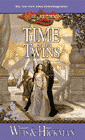 |
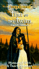 |
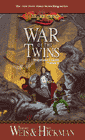 |
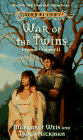 |
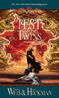 |
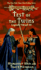 |
| 时光之卷(Time of the Twins) |
战争之卷(War of the Twins) |
试炼之卷(Test of the Twins) |
相信看过这三本的网友也不少了，不过紫晶还是简单说一下吧。龙枪传奇三本的故事一开始是接着编年史三部曲，讲述长枪之战结束后，雷斯林・马哲理为了实现他一直以来追求力量的野心，回到大灾变发生的时代挑战黑暗之后。他的孪生哥哥卡拉蒙・马哲理和坎德人泰斯也跟着回到那个年代去阻止他……顺便说一下，在龙枪传奇的最后，“残酷”作者借雷斯林之徒达拉玛(Dalamar)之手“谋杀”了奇蒂拉，sigh，惆怅……
野蛮人三部曲(barbarians)
保罗・B・汤姆斯潘(Paul B. Thomspon)、汤亚・C・库克(Tonya C. Cook)
| 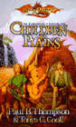 |
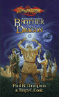 |
? |
| 大平原之子(Children of the Plain) |
龙之兄弟(Brother of the Dragon) |
??? |
大平原之子
故事发生在灰宝石的力量被释放之前(3100PC，参看拙作龙枪历史简表一文)的年代，那时还是精灵占主导的年代。一男一女两个逃避掠夺者追捕的平原之子关系着多个部落的命运，黑暗势力正冷酷地作着精密的计算想将文明之光毁于一旦。他们不得不走向从未去过的大平原以外的世界。主人公阿曼若(Amero)领导人类抵抗了精灵十年（这也是人类和精灵第一次正规的接触），但最后还是败于精灵骑兵之手……本书是野蛮人三部曲的第一部，虽然不是玛格丽特和崔西的著作，但却取得了一致好评――唯一的批评是为什么后面的两部迟迟不出！:)
龙之兄弟(计划近期出版)
生活在大平原上，意味着得始终和命运奋斗。由两个青年男女建立起来的部落联盟，经历了背叛者、法师、史前巨兽等等考验之后已经成为了一个强大的国家。一只青铜巨龙成为了他们的守护者。但不幸的是，也只有它一个而已……
传说系列(Tales)
玛格丽特・魏丝、崔西・希克曼等
| 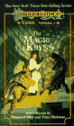 |
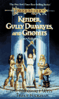 |
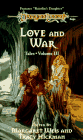 |
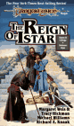 |
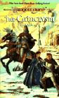 |
| 克莱恩的魔法(The Magic of Krynn) |
坎德人、古力矮人和侏儒(Kender,Gully Dwarves,and Gnomes) |
爱情与战争(Love and War) |
伊斯塔的统治(The Reign of Istar) |
大灾变(The Cataclysm)长枪之战(The War of the Lance) |
| 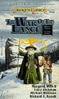 |
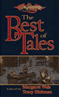 |
| 长枪之战(The War of the Lance) |
传说精选(The Best of Tales) |
克莱恩的魔法
本书由一系列介绍克莱恩世界传说故事的短篇小说组成。有关于伊斯坦血海中央的大漩涡的故事；从冰墙地区找寻龙珠的故事（呵呵还记得紫晶翻译的那篇小文章吗？）；帕林(Palin)通过大法师之塔试炼的故事等等。
坎德人、古力矮人和侏儒
短篇合集。其中一篇是帕林和他两个哥哥――坦宁和史东（这个是卡拉蒙为了纪念老友给儿子取的名字，不是龙枪编年史里的那个史东），以及一个神秘的矮人杜根・红锤(Dougan Redhammer)进行第一次冒险的故事；还有一篇讲的是龙骑将大地精投德的故事；另外一篇是一名索兰尼亚骑士遇见了一个米诺陶斯人，但这个牛头人很奇怪地没有攻击他，反而让他重新认识到什么是真正的“荣誉”……
爱情与战争
都是与爱情与战争有关的短篇合集。其中有修玛和他的爱人那条银龙的故事；金月和河风的故事；史东的父亲的故事；还有卡拉蒙所讲的雷斯林女儿的故事――唔，不知道是不是就是《龙枪传承》里的那篇……
伊斯塔的统治
本集中收录的是一些关于伊斯塔的故事，一些关于伊斯塔是如何步入大灾变的故事。比如索思爵士的故事；还有一些索兰尼亚骑士的故事；其中有篇比较有意思讲一个想成为索兰尼亚骑士的坎德人……
大灾变
本集收录大灾变和大灾变之后的一些短篇故事。比如一个索兰尼亚骑士和牧师的女儿是如何在大灾变后生存下来的；一名头脑精明的商人是如何大发灾难财的……
长枪之战
长枪之战前后的相关故事集。江湖术士到处兜售他们救赎信仰的故事；牧师跑到伊斯塔的废墟中寻求财宝的故事；狼人(werewolf)四处肆虐的故事；还有最精彩的泰索何夫“永远也不会讲”的故事……
传说精选
以上短篇小说的精选集。
英雄系列(Heroes)
| 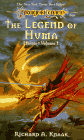 |
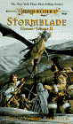 |
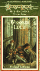 |
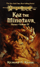 |
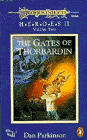 |
| 修玛的传说(The Legend of Huma) |
暴风之剑(Stormblade) |
鼬鼠的好运气(Weasel's Luck) |
米诺陶斯人卡兹(Kaz,the Minotaur) |
索巴丁之门(The Gates of Thorbardin) |
| 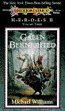 |
| 骑士加伦(Galen Beknighted) |
修玛的传说理查德・A・纳克(Richard A. Knaak)
顾名思义，这本书是讲述第四次巨龙战争时期(1018PC)，传说中的英雄――索兰尼亚骑士修玛的故事。作为一个人类，他是如何面对自己的恐惧、沮丧的，又是如何面对与银龙爱人吉妮丝(Gwynneth)的爱情的，还有他与传说中的大法师玛济斯的友谊，以及他与米诺陶斯英雄卡兹(Kaz)的相遇……总而言之，这本书揭示了克莱恩历史上最伟大的英雄修玛的故事，很多人会发现修玛并不是他们所想的那个样子，他不太象史东反而更象坦尼斯……
暴风之剑南希・瓦瑞安・博比瑞克(Nancy Varian Berberick)
索巴丁的矮人铸剑大师打造了这柄剑，但不久后就失窃了。长枪之战后，这柄剑重新出现了……就象所有的故事一样，好人和坏人都开始寻找这柄对矮人来说非常珍贵的剑。经过一番周折，打了N仗死了N人之后，好人终于战胜了坏蛋把剑还给了矮人云云。
鼬鼠的好运气迈克尔・威廉姆斯(Michael Williams)
“鼬鼠”是加伦・帕斯沃登(Galen Pathwarden)的外号。他在他父亲位于一大片沼泽中央的城堡里整天调皮捣蛋，于是他父亲命令他去为一名索兰尼亚骑士做为期一年的随从。在这一年中，他遇到了很多事，也经历很多善与恶的考验……
米诺陶斯人卡兹理查德・A・纳克(Richard A. Knaak)
卡兹也许是龙枪世界中非玛格丽特和崔西创造的角色中最为读者喜爱的了。他曾是修玛的朋友，被称为“英雄”。但现在他被族人放逐，这对于一个重视家族荣誉的米诺陶斯人来说简直就是奇耻大辱！但卡兹非但采取米诺陶斯人通常这种情况下的做法，反而逃入了人类的世界！在这趟旅途中，家族和善良两种观念时时困扰着卡兹……
索巴丁之门丹・帕金森(Dan Parkinson)
在矮人之门战役中，很多矮人死于费斯坦但提勒斯的法术之下。山岭矮人之王杜根(Duncan)也在关前的平原之战中失去了两个儿子。其中一个儿子格拉伦 (Grallen)那时戴着一顶魔法头盔，也在战役中失去了。据说谁找到了这顶头盔，山脉下的矮人就会重新联合起来。但同时，也会出现新的危险……
骑士加伦迈克尔・威廉姆斯(Michael Williams)
这是上面那本《鼬鼠的好运气》的后续篇。战胜了胆小、恶作剧等恶习的加伦终于成为了一名索兰尼亚骑士。但这次他的一个哥哥神秘地失踪了，据说是被绑架了。于是他和另外一个哥哥一起出发去寻找。作为一个年轻的没有经验的骑士，他将面对很多困难，还要和野蛮人部落打交道。另外他不知道的是，这趟旅程最终将把他带向阻碍黑暗之后计划中去……
前传系列(Preludes)
| 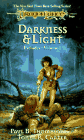 |
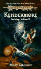 |
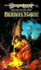 |
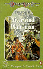 |
| 黑暗和光明(Darkness and Light) |
坎德摩尔(Kendermore) |
玛哲理兄弟(Brothers Majere) |
平原之子河风(Riverwind,The Plainsman) |
| 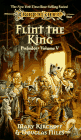 |
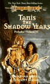 |
| 佛林特国王(Flint,The King) |
阴影年代的坦尼斯(Tanis,The Shadow Years) |
黑暗和光明保罗・B・汤姆斯潘(Paul B. Thomspon)、汤亚・C・库克(Tonya C. Cook)
故事发生在长枪之战之前五年，也就是五年之约刚刚立下的时候。史东和奇蒂拉一块儿出发去北方。史东是去寻找他的父亲，奇蒂拉去寻找愿意雇用她的雇主。一路上史东发现他与奇蒂拉在无论理念还是行动上都有如此多的不同之处。在路上他们遇见了一群疯狂的侏儒，一起乘坐侏儒们发明的机器跑到了红月努林那瑞上，在那里他们遇见了树人之王，还见到了水晶蚂蚁和其它奇怪的东西。他们还遇到了一条龙！（在这一点上马上有读者指出这是和龙枪编年史矛盾的，因为编年史上很明确地指出史东在长枪之战前从来没有见过龙。）
坎德摩尔玛丽・柯屈佛(Mary Kirchoff)
这是关于泰索何夫的一本前传。在故事里，泰斯被一名赏金猎人给绑架了！被带回他的故乡坎德摩尔的祭坛前面……呵呵别害怕，等待泰斯的不是什么坏事儿，而是新娘！不过她却神秘地失踪了！长毛象、暗杀者……泰斯最终成功地完成了这次冒险，拯救了坎德摩尔。
玛哲理兄弟凯文・斯坦(Kevin Stein)
小站曾经收录过凯文・斯坦的另一篇小说猎捕，不知大家还有没有印象……这篇小说是讲述雷斯林通过大法师之塔的试炼之后，他和卡拉蒙继续五年之约寻找真神的痕迹。途中他俩来到了一个叫做米莱克拉 (Mereklar)的城市，这座城市中所有的猫突然全部失踪了，这带给居民们很大的烦恼。于是正好需要用钱的兄弟俩接下了寻找这些失踪猫的任务，他俩必须顺着一系列奇怪的线索解开这个谜，并拯救这个城市。然后，雷斯林会得到更大的力量。
平原之子河风保罗・B・汤姆斯潘(Paul B. Thomspon)、汤亚・C・库克(Tonya C. Cook)
奎苏部落有一个传统：求婚者必须完成一个任务以示对新娘的感情。而河风得到是一个不可能的任务（Mission Impossible?:)）――找到真神存在的证据。河风和一名奇怪的占卜者凯屈弗力(Catchflea)、一名身份神秘的精灵女孩一起深入到失落的城市沙克沙罗斯里去寻找米莎凯女神的蓝色水晶杖。但为了完成他们的任务，他们还必须面对出发前就得到的恐怖的预言：他们中的一个会发疯，一个会死亡，剩下的一个会获得荣耀。
佛林特国王玛丽・柯屈佛(Mary Kirchoff)、道格拉斯・奈尔(Douglas Niles)
故事同样发生在五年之约的时期。佛林特・火炉回到了儿时的家乡希柳，发现那儿突然繁荣了起来。进一步的探查发现这种繁荣来自于经由这个小镇的武器贸易。而佛林特最终发现，原来这些武器贸易竟然是龙骑将武器走私计划的一部分！于是佛林特和另外一个女性矮人决心阻止这个危及克莱恩的计划。他俩成为了一支古力矮人的国王！带领着这支部队向武器走私发起了挑战。
阴影年代的坦尼斯芭芭拉・希捷(Barbara Siegel)、斯科特・希捷(Scott Siegel)
一个老法师请求坦尼斯进入他的记忆中去，回到过去的年代拯救他的恋人。为此坦尼斯得赌上自己的性命。但因为法师已经生命垂危，无力自己回到过去，所以坦尼斯还是接受了这个任务。其实，真正吸引坦尼斯的是，在这个老法师的记忆中，有坦尼斯的父亲的存在。这次任务说不上成功，也说不上是失败。但这次奇妙的经历使得坦尼斯收获了很多东西……
精灵国度三部曲(Elven Nations)
| 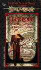 |
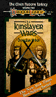 |
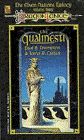 |
| 初生(First Born) |
阋墙之战(The Kinslayer War) |
奎灵那斯提(The Qualinesti) |
初生保罗・B・汤姆斯潘(Paul B. Thomspon)、汤亚・C・库克(Tonya C. Cook)
精灵王西瓦诺斯死后，他的儿子西瑟尔(Sithel)继承了王位，但令他头疼的是两个孪生儿子。哥哥西萨斯谨尊精灵长老会，而弟弟姬斯・卡南则喜欢和野精灵和亚苟斯的人类混在一起。在西瑟尔被谋杀后，兄弟俩联合起来维持动荡的精灵帝国，姬斯・卡南还阻止了人类军队对森林的破坏。然而，这一切都不能掩盖他俩之间越来越尖锐的矛盾……
阋墙之战道格拉斯・奈尔(Douglas Niles)
西萨斯继承了王位，并向亚苟斯帝国的人类宣战。而姬斯・卡南则被他的哥哥和精灵长老会判定犯了大错――因为他爱上了一个人类女子。惨烈的阋墙之战开始了，精灵和精灵互斗，人类和人类互斗，半精灵和半精灵互斗……这场战争没有胜利者，除了死亡。
奎灵那斯提(The Qualinesti)保罗・B・汤姆斯潘(Paul B. Thomspon)、汤亚・C・库克(Tonya C. Cook)
阋墙之战后，姬斯・卡南和追随他的人来到了奎灵那斯提，他自己成为了第一代太阳咏者。那时，人类、精灵、矮人一同生活在一起，作为友好和平象征的帕克―塔卡斯要塞也修建了起来。但这个新生的精灵王国却面临着立国以来最大的危机――姬斯・卡南的半精灵儿子，王国未来的继承人，一系列奇怪的行为是否说明他根本就不够格成为下一届太阳咏者…… |